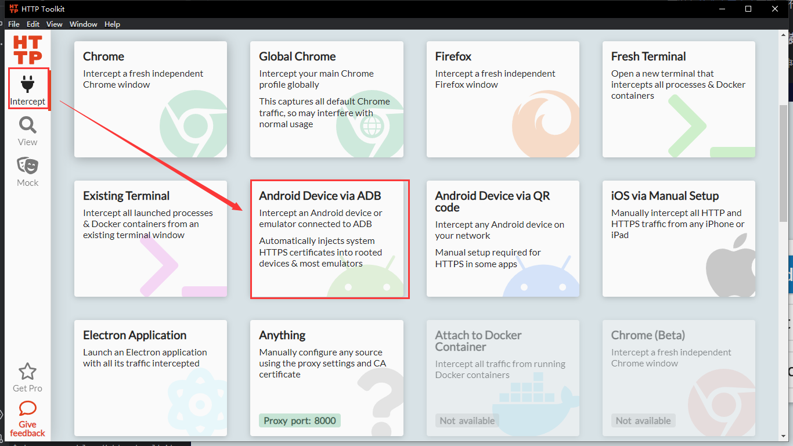
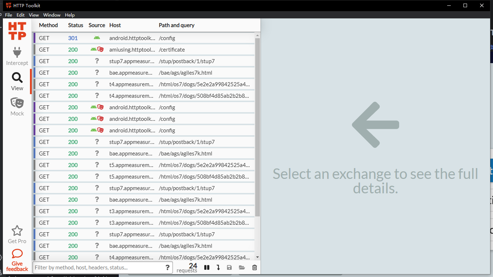
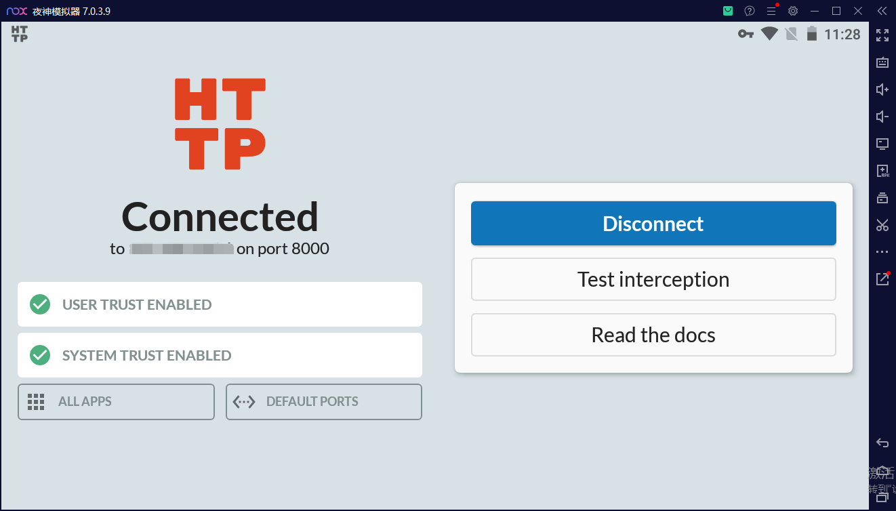
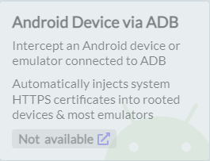
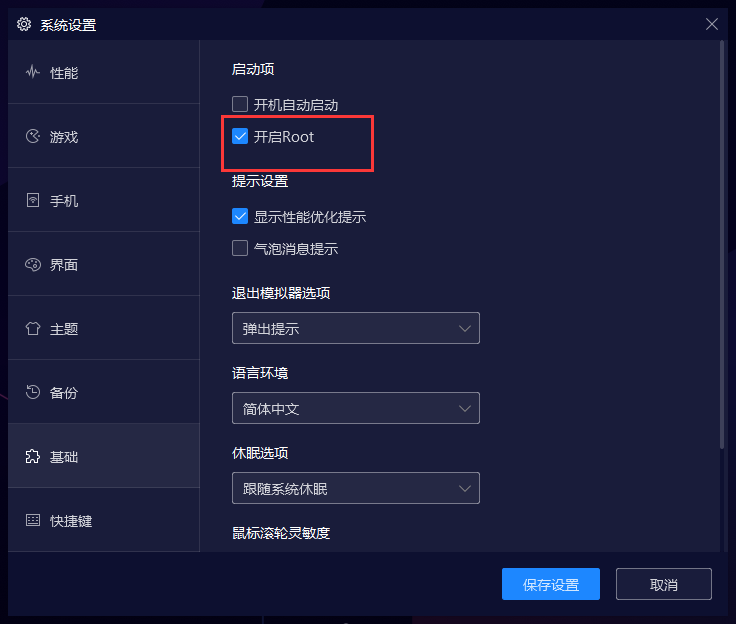

主要步骤
1. 在电脑上安装Http Toolkit
2. 在电脑上安装夜神模拟器
3. 下载Http Toolkit Android端
可以在谷歌应用商店下载。不支持谷歌应用商店的手机可以在APKPure下载。
4. 在夜神模拟器中安装Http Toolkit Android端
将下载好的apk文件拖入夜神模拟器中即可。
5. 开始抓包
在电脑上打开Http Toolkit，选择Android Device via ADB。

然后切换到夜神模拟器中，打开Http Toolkit，会提示是否信任证书，直接点击确定。就能获取到抓包数据了。

常见问题
1. 为什么不用Http Toolkit的Android Device via QR Code？使用起来更便捷，也不用安装夜神模拟器。
因为现在手机的安卓版本普遍较高。在Android 7.0及以上的系统中，就算你安装了Http Toolkit的证书，手机内的应用也不会信任它。而使用Android Device via ADB能避免这个问题。详情请看这里。
2. 一定要用夜神模拟器吗？其他安卓模拟器不行吗？
也可以。只要打开你的安卓模拟器之后，Android Device via ADB图标正常显示就可以使用。
图标这样是不能使用的。
注意事项
- 要模拟器开着的情况下，Http Toolkit的
Android Device via ADB图标才会正常显示。 - 要使用
Android Device via ADB，设备是需要Root过的。所以最好选择的安卓模拟器是支持Root设置或支持ADB的。这也是我选择夜神模拟器的原因。 - 其他注意事项请看这里。